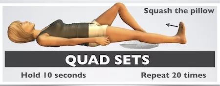
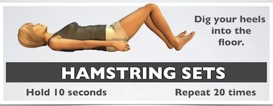
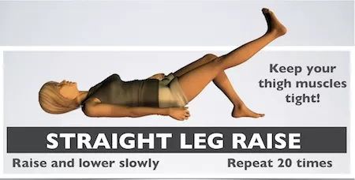
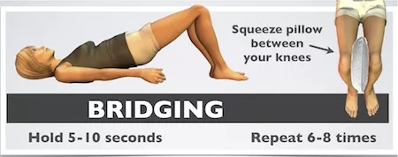
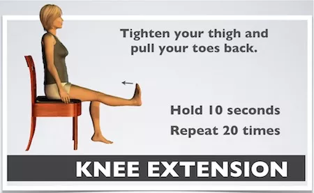
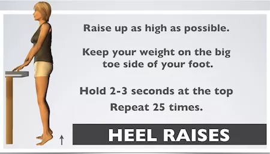
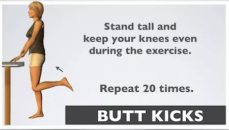

These knee exercises are a great starting point if you have difficulty squatting, climbing stairs, or balancing on 1 foot. Practice this routine 1-2 times per day to help rebuild the basic strength in your knee. (Please check with your health care provider before beginning any exercise program.) Looking for a more challenging routine? See the article on knee strengthening exercises. The intermediate exercises on that page include illustrations and videos.
Place a pillow lengthwise under your knee. Pull your toes back and push your leg down to squash the pillow. Hold for 10 seconds and repeat up to 20 times. You should feel your thigh and gluteus muscles during this exercise. Begin with moderate effort and then increase your effort gradually. This exercise can be done lying flat as shown, sitting in a recliner, or leaning against a wall.
Lie on your back with knees bent and toes up. Dig your heels into the ground and pull back without sliding your heels. Hold for 10 seconds and repeat up to 20 times. You should feel the back of your thigh, the hamstrings, during this exercise. As with quad sets, start with a moderate effort and increase your effort gradually.
Tighten your thigh and pull your toes back just as you do for the quad set, then maintain the muscle tightness as you slowly raise your leg 18 inches. Lower slowly, relax your muscles briefly, then tighten your thigh, pull your toes back and repeat 20 times.Note: These first 3 knee exercises are the least stressful on the knee joint as they require little to no movement of the knee itself.
Knees bent and feet flat on the floor as above with your heels spaced comfortably from your bottom. Fold a bed pillow in half, and place it between your knees. Squeeze the pillow and hold on to it tightly. Raise your bottom upward slowly lifting one vertebra at a time from your exercise mat. Continue lifting your bottom upward until there is a straight line from your shoulders to your knees. Hold this position 5-10 seconds. Repeat 6-8 times. Think of reaching your knees forward over your ankles.
Note: If this exercise is uncomfortable, just squeeze the pillow and hold it 10 seconds. This is called an adductor set, as it works the inner thigh muscles. Once you can do this (and knee exercises #1 and 2) 20 times with a strong effort, try bridging again.
Sit upright in a chair, straighten your leg, tighten your thigh and pull your toes back. Hold for 10 seconds and repeat up to 20 times. The more you tighten your muscles, the better results you’ll get from this exercise. You may feel a stretch behind your knee during the exercise. For a greater challenge, straighten both legs at the same time, or do this exercise with an adjustable ankle weight up to 5 pounds.
If you feel a strong stretch behind your knee during the exercise, pump your ankle (point your toes and flex your foot back) several times instead of just holding your toes back--this will help improve your flexibility. Find more stretches here.
Hold onto a chair or countertop only as much as you need to for safety. Go up on your toes as high as possible without leaning your body weight forward. Stay up and maintain your balance for 2-3 seconds. Repeat up to 25 times. Keep your weight over your big toes as you go up and down.Once you can easily do 25 repetitions, try lowering back down on one foot. Then progress to single leg heel raises.
Keep your knees in line and lift your heel toward your rear end, as high as possible. Stand upright when you lift your heel. You will feel your hamstring muscles during this exercise, and you may feel a stretch in the front of your thigh. Repeat up to 20 times per side. Add an ankle weight to increase the challenge.
